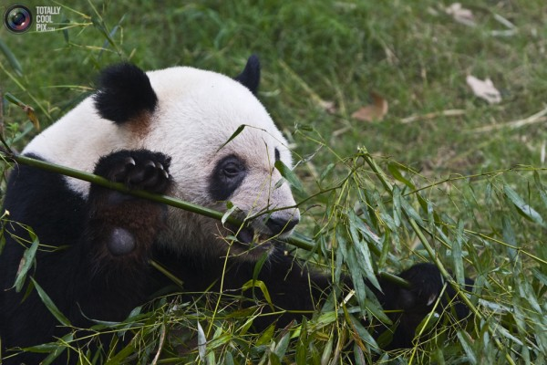

Лето не самая лучшая пора для носков. Лучший вариант, конечно, сандали и шорты. Но против корпоративного дресс-кода не попрёшь.
C мая месяца подсел на носки из бамбука. Вообще, учась в школе, никогда бы не подумал, что слова бамбук и галантерея могут иметь что-то общего. Но химия, похоже одна из самых интенсивно развивающихся наук, поэтому носки из так называемой бамбуковой вискозы уже можно купить даже в кемеровских магазинах.

В чём достоинства бамбуковых носков?
- гипоаллергенны (не представляю честно говоря аллергии на носки хлопковые, но ведь всё равно достоинство)
- впитывают пот в 4 раза лучше чем носки из хлопка (не знаю как в лабораториях производят замеры, но ноги в носках из бамбука реально не бывают влажными), при этом запах пота носки не сохраняют.
- сохраняют форму так же хорошо, как синтетические носки (надеюсь никто не носит носки из пластмассы?)
- лёгкие, мягкие, обладают лёгким блеском. Тактильно похожи на шёлковые.
В чём недостатки?
У бамбуковых носков недостатков нет. Есть небольшой недостаток у Кемерова, потому что из магазинов где я бываю такие носки продаются только в «Палате». Да, и только чёрные.
Стоят бамбуковые носки в «Палате» на Тухачевского, около 85 рублей.